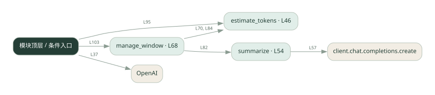

1-11 · 全课程第 11 节
上下文窗口管理
ctx_window.py
源码快照 17bd4a114f88 · 静态解析 · 2026-09-10
01 / 要完成的事
估算历史长度，超出阈值时压缩历史并保留近期消息。
02 / 为什么要做
模型输入长度有限，历史越来越长还会增加延迟和费用。
03 / 当前代码状态
存在外部服务或模型依赖；执行前需按源文件配置依赖和凭据，可能联网或产生 API 费用。 本次只做静态解析，没有运行练习，也没有替你填写或修改原代码。
04 / 调用图
打开大图 ↗实线：源码中的直接调用；虚线：函数引用/注册、动态调用或按方法名推断的候选。L 是调用所在源码行号。箭头不表示执行顺序或每次必经；分支、循环、异步调度及框架内部调用需结合源码。灰色是外部/未解析目标，橙色是动态分发；省略 print、len 和常规容器操作以减少干扰。孤立函数可能尚未接入。

先从 模块入口 出发，沿箭头找到本文件函数，再查看外部调用或动态分发。右侧调用清单保留所有静态调用点，能回到原文件逐行对照。
05 / 函数定位
| 函数 / 定义行 | 职责（源码注释） | 内部调用 |
|---|---|---|
estimate_tokensL46 | 粗估 token：中文 1 字≈1 token，这里直接用字符数近似（生产用 tiktoken 更准） | len |
summarizeL54 | 用 LLM 把早期对话压成一段摘要 | 动态对象.join, client.chat.completions.create |
manage_windowL68 | 超窗时：把最旧的对话摘要掉，保留 system + 摘要 + 最近几条 | estimate_tokens, summarize |
这样做的优点
持续对话不必无限保留所有原文。
代价与局限
字符估算不是精确 token 数；摘要会丢失细节。
适用场景
长对话、保留大意比保留逐字原文更重要的场景。
不宜直接照搬
需要逐条原文追溯的记录系统。
动手检验理解
在早期消息埋入一个数字，触发压缩后检查数字是否仍被保留。
有未实现位置时先预测，再补齐验证。能启动不等于逻辑正确。
查看全部 25 个静态调用 / 引用点
| 调用方 | 目标 | 源码行 | 类型 |
|---|---|---|---|
| <模块入口> | OpenAI | 37 | 调用 |
| estimate_tokens | len | 50 | 调用 |
| summarize | 动态对象.join | 56 | 调用 |
| summarize | client.chat.completions.create | 57 | 调用 |
| manage_window | estimate_tokens | 70 | 调用 |
| manage_window | summarize | 82 | 调用 |
| manage_window | estimate_tokens | 84 | 调用 |
| <模块入口> | range | 91 | 调用 |
| <模块入口> | messages.append | 92 | 调用 |
| <模块入口> | messages.append | 93 | 调用 |
| <模块入口> | estimate_tokens | 95 | 调用 |
| <模块入口> | print | 96 | 调用 |
| <模块入口> | print | 97 | 调用 |
| <模块入口> | print | 98 | 调用 |
| <模块入口> | print | 99 | 调用 |
| <模块入口> | len | 99 | 调用 |
| <模块入口> | print | 100 | 调用 |
| <模块入口> | print | 101 | 调用 |
| <模块入口> | manage_window | 103 | 调用 |
| <模块入口> | print | 104 | 调用 |
| <模块入口> | len | 104 | 调用 |
| <模块入口> | print | 105 | 调用 |
| <模块入口> | print | 106 | 调用 |
| <模块入口> | print | 109 | 调用 |
| <模块入口> | len | 109 | 调用 |